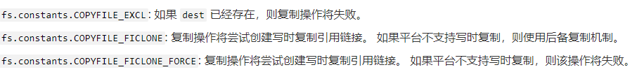

一、nodejs笔记
1.1 请求服务器
1.1.1 get请求
1.2.3.4.5.6.7.8.9.10.11.12.13.14.15.const https = require("https");https.get(url,options,res =>{ let str = ""; res.on("data",chunk => { //数据传输中 str += chunk; }); res.on("end",() => { //数据传输完毕 console.log(str); }); res.on("error",err => { console.log("报错了"); });})1.1.2 post请求
1.2.3.4.5.6.7.8.9.10.11.12.13.14.15.16.17.18.19.20.21.22.23.24.25.const https = require("https");function post(options,data){ return new Promise((resolve,reject) => { const req = https.request(options,res => { let str = ""; res.on("data",chunck => str += chunck); res.on("end",() => resolve(JSON.parse(str))); res.on("error",err => reject(err)); }); req.on("error",err => reject(err)); req.write(data); req.end(); });}//options格式const options = { hostname: "api.weixin.qq.com",//请求url的host port: 443,//请求端口 https 443 http 80 path: `/wxa/business/getuserphonenumber?access_token=${accessToken}`,//url中host后面部分 method: "POST",//请求方法 headers: {//请求头 "Content-Type": "application/json" }};//data就传一个对象就好了1.2 fs模块操作
1.2.1 常用api
1.2.3.4.5.6.7.8.9.10.11.12.13.14.15.16.17.18.19.20.21.22.23.24.25.26.27.28.29.30.31.32.33.34.35.36.37.38.39.40.41.42.const fs = require("fs");//判断文件是否存在//同步 const exist = fs.existsSync("文件夹的绝对路径");console.log(exist ? "存在文件" : "不存在文件");//异步 fs.exists("文件夹的绝对路径",(exist) => { if(exist){ console.log("存在文件夹或者文件") }else{ console.log("不存在文件夹或者文件"); }}); //创建文件夹//同步fs.mkdirSync("文件夹绝对路径"); //获取文件夹目录const dirs = fs.readdirSync("文件夹绝对路径");//dirs是一个数组,就是传入文件夹中的所有文件和文件夹 //判断文件类型const type = fs.statSync("文件绝对路径");type.isDirectory();//返回true就是文件夹,返回false就是文件type.isFile();//返回true是文件 //复制文件//同步fs.copyFileSync(from,to,mode);//异步fs.copyFileSync(from ,to ,err => { if(err)console.log(err);}) //删除文件和文件夹//删除文件fs.unlinkSync("文件绝对路径");fs.unlink("文件绝对路径",callback);//删除文件fs.rmdirSync("文件绝对路径");fs.rmdir("文件绝对路径",callback);1.2.2 读取文件
流
1.2.3.4.5.6.7.8.9.10.11.12.13.14.15.16.17.const fs = require("fs");let stream = fs.createReadStream(文件地址,{ //配置 flag: "r", encoding: "utf8"});let res = "";//如果是二进制文件就使用数组,一个一个push进去stream.on("data",chunck => { str += chunck;});stream.on("end",() => { console.log(str); stream.close();});stream.on("close",() => { console.log("close");});readFile
1.2.3.4.5.6.7.8.9.10.11.12.const fs = require("fs");fs.readFile("文件地址",{ //options flag: "r", encoding: "utf8"},(err,data) => { if(err){ console.log(err); } console.log(data);});const data = fs.readFileSync("文件地址","options");1.2.3 写入文件
流
1.2.3.4.5.6.7.8.9.10.11.12.13.14.15.16.17.const fs = require("fs");let stream = fs.createWriteStream("文件地址",{ //配置 flag: "w", encoding: "utf8"});stream.on("end",() => { //写入完成 stream.close();});stream.on("close",() => { //关闭});stream.on("error",err => { //写入报错});stream.write(data);writeFile
1.2.3.4.5.6.7.8.const fs = require("fs");fs.writeFile("写入地址","写入内容","配置",err => { if(err){ //写入失败 } //写入成功});fs.writeFIleSync("写入地址","写入内容","配置");flag值
| "w" | 写入内容 |
| "r" | 读取内容 |
| "a" | 追加内容(没有文件会创建) |
1.3 使用MongoDB
1.3.1 连接
1.2.3.4.5.6.7.8.9.10.11.12.13.14.15.16.17.const { MongoClient } = require("mongodb");let url = "mongodb://localhost:端口";//mongodb连接地址let dbName = "需要连接的数据库名称";let collection = "表名";let client = new MongoClient(url);let con = null; async function connect(){ try{ await client.connect(); let db = client.db(dbName); con = db.collection(collection); }catch(err){ //连接出现问题 }}connect();1.3.2 查找
1.2.3.4.5.6.7.8.9.10.11.12.13.14.15.16.17.18.19.const data = await con.find({ //条件 name: "小李"//查询name字段等于小李的数据}).toArray(); //还可以const data = await con.find({ name: {"$eq": "小李"}}).toArray(); //查找多少条const data = await con.find({ name: "小李"}).limit(10).toArray();//查找前10条数据 //从多少条数据开始获取const data await con.find({ name: "小李"}).skip(10).limit(10).toArray();//从第10条数据开始拿10条数据ejs
js的模板引擎,主要就是根据不同数据显示不同，但是样式和布局都是一样的
使用
1.2.3.4.5.6.7.8.9.10.11.12.13.14.15.16.17.18.19.20.21.22.23.24.25.//下载npm i ejs -D //使用const ejs = require("ejs"); //方法一const template = ejs.compile("要转换的内容",配置参数);template(传递的参数); //方法二ejs.render("要转换的内容",传递的参数,配置参数); //方法三ejs.renderFile("文件名",传递参数,配置参数,function(err,str){ console.log(err);//错误信息 console.log(str);//处理完后的模板}); //文件中使用<div> <%= 动态的数据 %> <% 脚本流程 %>//比如说通过if控制或者forEach循环处理 <%- include("文件地址","传递数据","配置参数"); %> //用于嵌套ejs模板</div>例子
1.2.3.4.5.6.7.8.9.10.11.12.13.14.15.16.17.18.19.20.21.22.23.24.const ejs = require("ejs");const { resolve } = require("path");const data = [ {name: "巴拉巴拉",age: 18,hobby: "电影",photo: "http://balabala/photo.png"}];ejs.renderFile(resolve(__dirname,"./template/code.html"),{data,fileDir: resolve(__dirname,"./template/card.html")},function(err,str){ console.log(str);}); //template/code.html<% if(data){ %>//js的if一样的,forEach也是<% data.forEach(function(item){ %> <%- include(fileDir,{item}) %><% }) %><% } %> //template/card.html<% if(item){ %><div>姓名:<%= item.name %></div><div> 头像: <div style="background: url(<%= item.photo %>);"></div></div>...